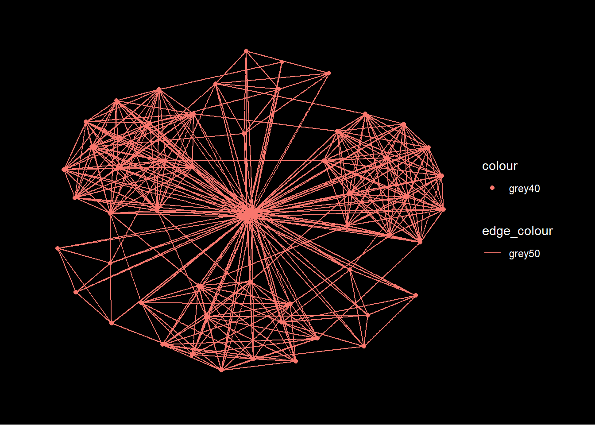
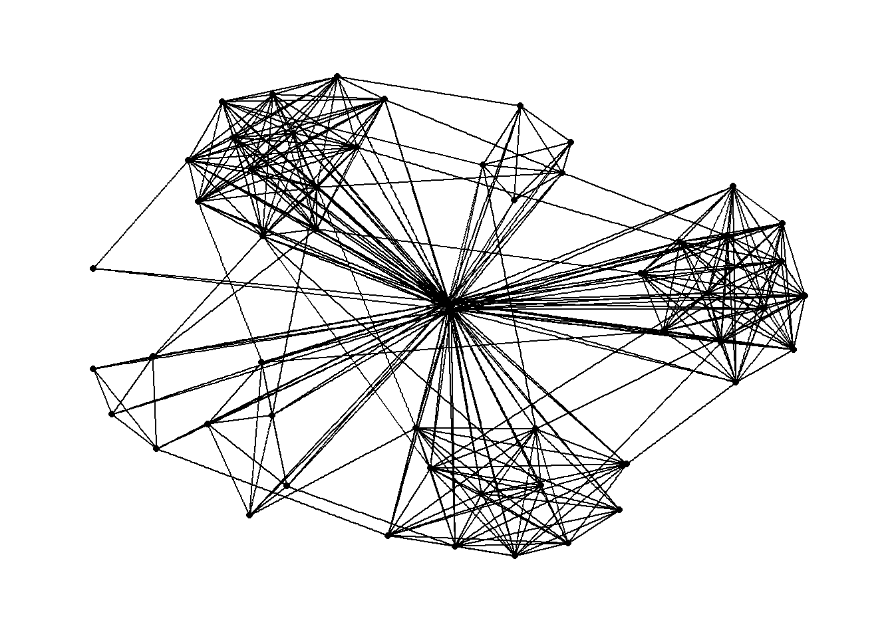
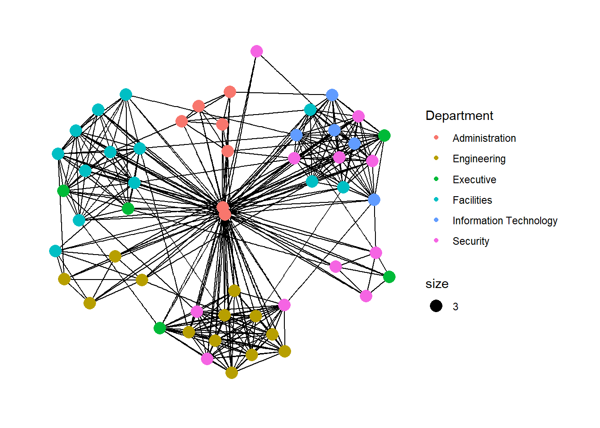
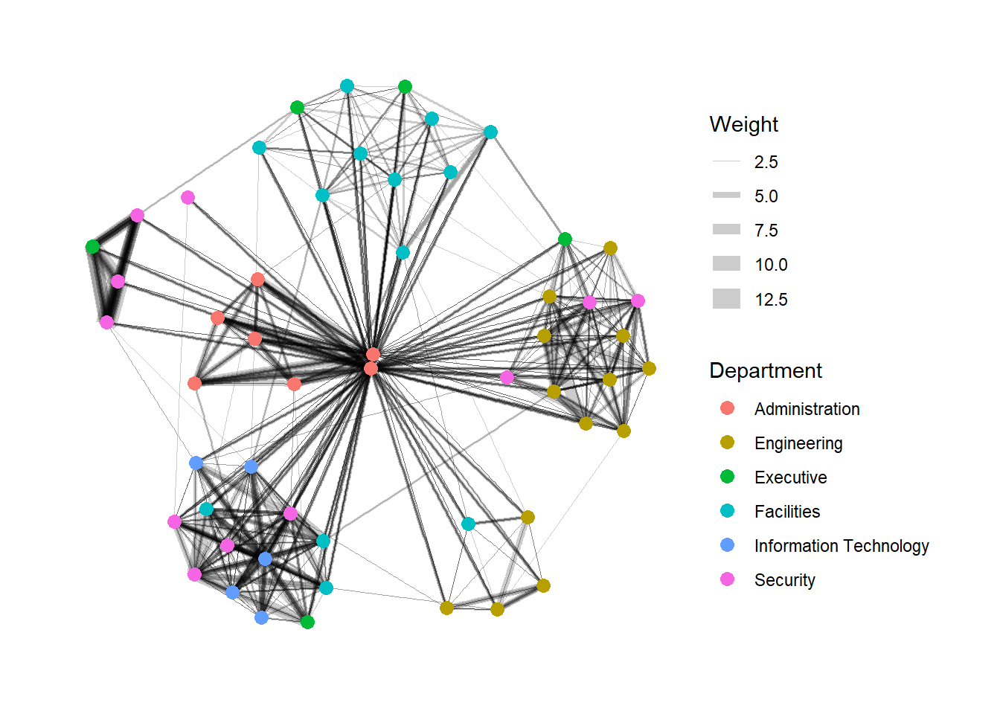
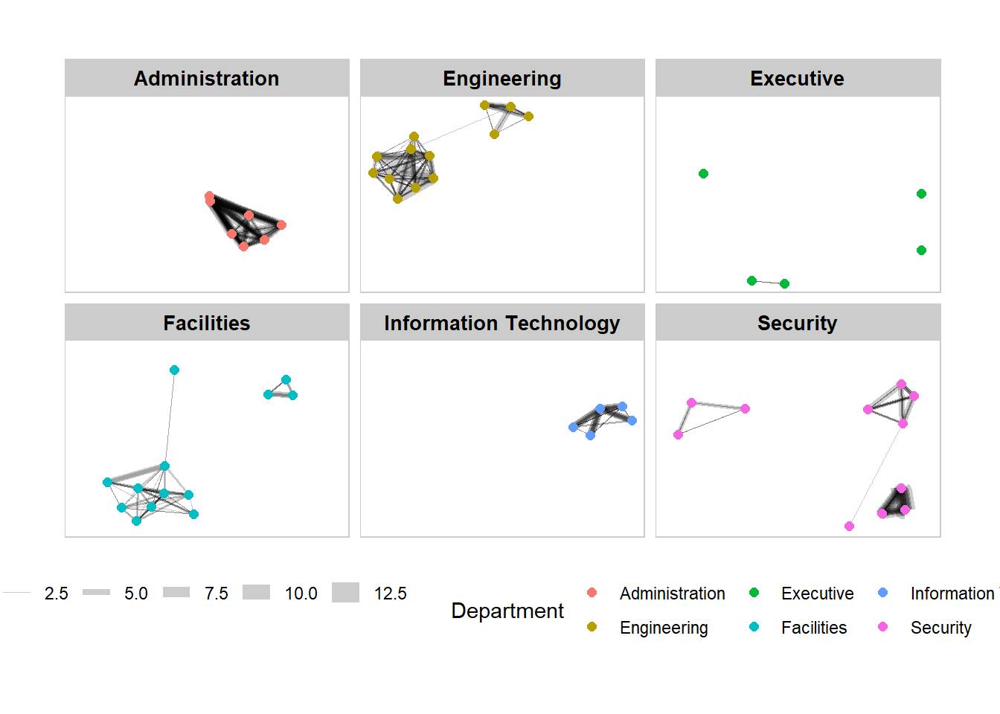
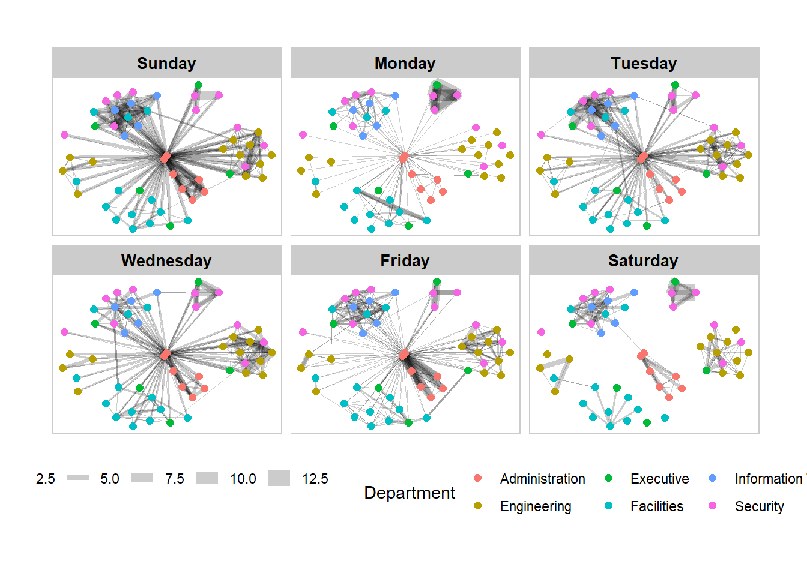
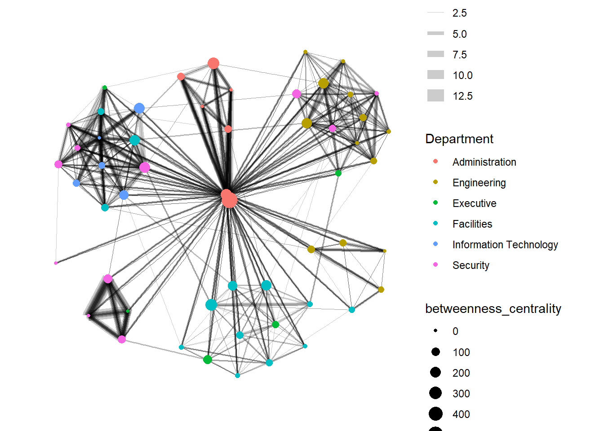
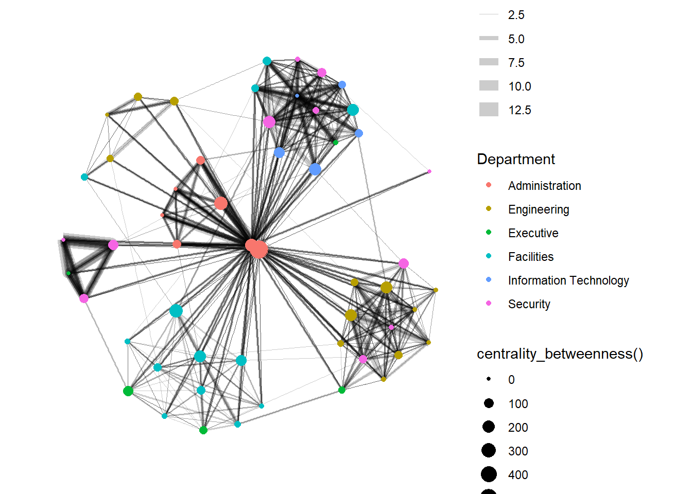
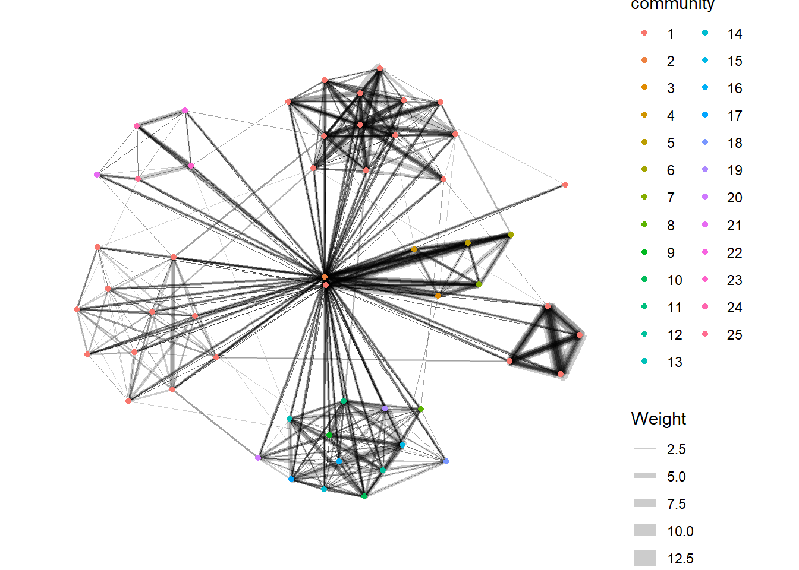

pacman::p_load(igraph, tidygraph, ggraph, visNetwork, lubridate, clock, graphlayouts, tidyverse)Hands-on Exercise 8: Visualising Network Data
1. Install and launching R packages
The code chunk below uses p_load() of pacman package to check if packages are installed in the computer. If they are, then they will be launched into R. The R packages installed are:
- lubridate for handling and wrangling time data
- ggraph for designing network graphs using ggplot2 skills
2. Importing the data
Two types of data. One contains the nodes data and the other contains the edges (also know as link) data.
GAStech-email_edges.csv which consists of two weeks of 9063 emails correspondances between 55 employees.
GAStech_email_nodes.csv which consist of the names, department and title of the 55 employees.
GAStech_nodes <- read_csv("data/GAStech_email_node.csv")
GAStech_edges <- read_csv("data/GAStech_email_edge-v2.csv")Let’s review the imported data frame
glimpse(GAStech_edges)Rows: 9,063
Columns: 8
$ source <dbl> 43, 43, 44, 44, 44, 44, 44, 44, 44, 44, 44, 44, 26, 26, 26…
$ target <dbl> 41, 40, 51, 52, 53, 45, 44, 46, 48, 49, 47, 54, 27, 28, 29…
$ SentDate <chr> "6/1/2014", "6/1/2014", "6/1/2014", "6/1/2014", "6/1/2014"…
$ SentTime <time> 08:39:00, 08:39:00, 08:58:00, 08:58:00, 08:58:00, 08:58:0…
$ Subject <chr> "GT-SeismicProcessorPro Bug Report", "GT-SeismicProcessorP…
$ MainSubject <chr> "Work related", "Work related", "Work related", "Work rela…
$ sourceLabel <chr> "Sven.Flecha", "Sven.Flecha", "Kanon.Herrero", "Kanon.Herr…
$ targetLabel <chr> "Isak.Baza", "Lucas.Alcazar", "Felix.Resumir", "Hideki.Coc…3. Data wrangling
3.1 Using lubridate package to change the time
GAStech_edges <- GAStech_edges %>%
#dmy() transforms the SentDate to Date data type
mutate(SendDate = dmy(SentDate)) %>%
#wday() returns the day of the week as a decimal number or an ordered factor if label is TRUE. The argument abbr is FALSE keep the day spelled in full, i.e. Monday. the values in the Weekday field are in ordinal scale.
mutate(Weekday = wday(SentDate,
label = TRUE,
abbr = FALSE))
GAStech_edges# A tibble: 9,063 × 10
source target SentDate SentTime Subject MainS…¹ sourc…² targe…³ SendDate
<dbl> <dbl> <chr> <time> <chr> <chr> <chr> <chr> <date>
1 43 41 6/1/2014 08:39 GT-Seismi… Work r… Sven.F… Isak.B… 2014-01-06
2 43 40 6/1/2014 08:39 GT-Seismi… Work r… Sven.F… Lucas.… 2014-01-06
3 44 51 6/1/2014 08:58 Inspectio… Work r… Kanon.… Felix.… 2014-01-06
4 44 52 6/1/2014 08:58 Inspectio… Work r… Kanon.… Hideki… 2014-01-06
5 44 53 6/1/2014 08:58 Inspectio… Work r… Kanon.… Inga.F… 2014-01-06
6 44 45 6/1/2014 08:58 Inspectio… Work r… Kanon.… Varja.… 2014-01-06
7 44 44 6/1/2014 08:58 Inspectio… Work r… Kanon.… Kanon.… 2014-01-06
8 44 46 6/1/2014 08:58 Inspectio… Work r… Kanon.… Stenig… 2014-01-06
9 44 48 6/1/2014 08:58 Inspectio… Work r… Kanon.… Hennie… 2014-01-06
10 44 49 6/1/2014 08:58 Inspectio… Work r… Kanon.… Isia.V… 2014-01-06
# … with 9,053 more rows, 1 more variable: Weekday <ord>, and abbreviated
# variable names ¹MainSubject, ²sourceLabel, ³targetLabel3.2 Wrangling attributes
A close examination of GAStech_edges data.frame reveals that it consists of individual e-mail flow records. This is not very useful for visualisation.
In view of this, we will aggregate the individual by date, senders, receivers, main subject and day of the week.
GAStech_edges_aggregated <- GAStech_edges %>%
filter(MainSubject == "Work related") %>%
group_by(source, target, Weekday) %>%
summarise(Weight = n()) %>%
filter(source!=target) %>%
filter(Weight > 1) %>%
ungroup()
GAStech_edges_aggregated# A tibble: 1,372 × 4
source target Weekday Weight
<dbl> <dbl> <ord> <int>
1 1 2 Sunday 5
2 1 2 Monday 2
3 1 2 Tuesday 3
4 1 2 Wednesday 4
5 1 2 Friday 6
6 1 3 Sunday 5
7 1 3 Monday 2
8 1 3 Tuesday 3
9 1 3 Wednesday 4
10 1 3 Friday 6
# … with 1,362 more rows4. Using tidygraph to create network objects
tidygraph package provides a tidy API for graph/network manipulation. While network data itself is not tidy, it can be envisioned as two tidy tables, one for node data and one for edge data. tidygraph provides a way to switch between the two tables and provides dplyr verbs for manipulating them.
Two functions of tidygraph package can be used to create network objects, they are:
tbl_graph()creates atbl_graphnetwork object from nodes and edges data.as_tbl_graph()converts network data and objects to atbl_graphnetwork
4.1 Using tbl_graph() to build tidygraph’s graph object
GAStech_graph <- tbl_graph(nodes = GAStech_nodes,
edges = GAStech_edges_aggregated,
directed = TRUE)
GAStech_graph# A tbl_graph: 54 nodes and 1372 edges
#
# A directed multigraph with 1 component
#
# Node Data: 54 × 4 (active)
id label Department Title
<dbl> <chr> <chr> <chr>
1 1 Mat.Bramar Administration Assistant to CEO
2 2 Anda.Ribera Administration Assistant to CFO
3 3 Rachel.Pantanal Administration Assistant to CIO
4 4 Linda.Lagos Administration Assistant to COO
5 5 Ruscella.Mies.Haber Administration Assistant to Engineering Group Manag…
6 6 Carla.Forluniau Administration Assistant to IT Group Manager
# … with 48 more rows
#
# Edge Data: 1,372 × 4
from to Weekday Weight
<int> <int> <ord> <int>
1 1 2 Sunday 5
2 1 2 Monday 2
3 1 2 Tuesday 3
# … with 1,369 more rowsThe output above reveals that GAStech_graph is a tbl_graph object with 54 nodes and 1372 edges.
The command also prints the first six rows of “Node Data” and the first three of “Edge Data”.
It states that the Node Data is active. The notion of an active tibble within a
tbl_graphobject makes it possible to manipulate the data in one tibble at a time.
The nodes tibble data frame is activated by default, but you can change which tibble data frame is active with the activate() function. Thus, if we wanted to rearrange the rows in the edges tibble to list those with the highest “weight” first, we could use activate() and then arrange().
GAStech_graph %>%
activate(edges) %>%
arrange(desc(Weight))# A tbl_graph: 54 nodes and 1372 edges
#
# A directed multigraph with 1 component
#
# Edge Data: 1,372 × 4 (active)
from to Weekday Weight
<int> <int> <ord> <int>
1 40 41 Saturday 13
2 41 43 Monday 11
3 35 31 Tuesday 10
4 40 41 Monday 10
5 40 43 Monday 10
6 36 32 Sunday 9
# … with 1,366 more rows
#
# Node Data: 54 × 4
id label Department Title
<dbl> <chr> <chr> <chr>
1 1 Mat.Bramar Administration Assistant to CEO
2 2 Anda.Ribera Administration Assistant to CFO
3 3 Rachel.Pantanal Administration Assistant to CIO
# … with 51 more rows4.2 Plotting Network Data with ggraph package
ggraph builds upon three core concepts that are quite easy to understand:
The Layout defines how nodes are placed on the plot, that is, it is a conversion of the relational structure into an x and y value for each node in the graph.
ggraphhas access to all layout functions available inigraphand furthermore provides a large selection of its own, such as hive plots, treemaps, and circle packing.The Nodes are the connected entities in the relational structure. These can be plotted using the
geom_node_*()family of geoms. Some node geoms make more sense for certain layouts, e.g.geom_node_tile()for treemaps and icicle plots, while others are more general purpose, e.g.geom_node_point().The Edges are the connections between the entities in the relational structure. These can be visualized using the
geom_edge_*()family of geoms that contain a lot of different edge types for different scenarios. Sometimes the edges are implied by the layout (e.g. with treemaps) and need not be plotted, but often some sort of line is warranted.
Plotting the basic network graph with ggraph(), geom_edge_link() and geom_node_point()
The basic plotting function is ggraph(), which takes the data to be used for the graph and the type of layout desired. Both of the arguments for ggraph() are built around igraph. Therefore, ggraph() can use either an igraph object or a tbl_graph object.
theme_graph() removes redundant elements in order to focus on the network data
ggraph(GAStech_graph) +
geom_edge_link(aes(color = 'grey50')) +
geom_node_point(aes(color = 'grey40')) +
theme_graph(background = "black",
text_colour = "white")
Changing the layout
ggraph(GAStech_graph,
#"fr" stands for Fruchterman and Reingold layout
layout = "fr") +
geom_edge_link(aes()) +
geom_node_point(aes()) +
theme_graph()
Modifying the nodes to the respective departments
ggraph(GAStech_graph,
layout = "nicely") +
geom_edge_link(aes()) +
#geom_node_point is equivalent to geom_point in ggplot2
geom_node_point(aes(colour = Department,
size = 3)) +
theme_graph()
Modifying the edges (line thickness) to the weight variable
ggraph(GAStech_graph,
layout = "nicely") +
#geom_edge_link draws edges in the simplest way - as straight lines between the start and end nodes. But, it can do more that that. In the example above, argument width is used to map the width of the line in proportional to the Weight attribute and argument alpha is used to introduce opacity on the line.
geom_edge_link(aes(width=Weight),
alpha=0.2) +
scale_edge_width(range = c(0.1, 5)) +
geom_node_point(aes(colour = Department),
size = 3) +
theme_graph()
4.3 Creating facet graphs
In visualising network data, faceting can be used to reduce edge over-plotting in a very meaning way by spreading nodes and edges out based on their attributes. In this section, faceting techniques are used to visualise network data.
There are three functions in ggraph to implement faceting, they are:
facet_nodes() whereby edges are only drawn in a panel if both terminal nodes are present here,
facet_edges() whereby nodes are always drawn in al panels even if the node data contains an attribute named the same as the one used for the edge facetting, and
facet_graph() faceting on two variables simultaneously.
Example with facet_nodes()
set_graph_style()
g <- ggraph(GAStech_graph,
layout = "nicely") +
geom_edge_link(aes(width=Weight),
alpha=0.2) +
scale_edge_width(range = c(0.1, 5)) +
geom_node_point(aes(colour = Department),
size = 2)
g + facet_nodes(~Department)+
th_foreground(foreground = "grey80",
border = TRUE) +
theme(legend.position = 'bottom')
Example with facet_edges()
set_graph_style()
g <- ggraph(GAStech_graph,
layout = "nicely") +
geom_edge_link(aes(width=Weight),
alpha=0.2) +
scale_edge_width(range = c(0.1, 5)) +
geom_node_point(aes(colour = Department),
size = 2)
g + facet_edges(~Weekday) +
#add frame to the facets
th_foreground(foreground = "grey80",
border = TRUE) +
theme(legend.position = 'bottom')
5. Network Metrics Analysis
5.1 Computing centrality Indices
Centrality measures are a collection of statistical indices use to describe the relative important of the actors are to a network. There are four well-known centrality measures, namely: degree, betweenness, closeness and eigenvector. It is beyond the scope of this hands-on exercise to cover the principles and mathematics of these measure here. Refer to Chapter 7: Actor Prominence of A User’s Guide to Network Analysis in R to gain better understanding of theses network measures.
GAStech_graph %>%
#centrality_betweenness() is from tidygraph
mutate(betweenness_centrality = centrality_betweenness()) %>%
ggraph(layout = "fr") +
geom_edge_link(aes(width=Weight),
alpha=0.2) +
scale_edge_width(range = c(0.1, 5)) +
geom_node_point(aes(colour = Department,
size=betweenness_centrality)) +
theme_graph()
5.2 Visualising network metrics
It is important to note that from ggraph v2.0 onward tidygraph algorithms such as centrality measures can be accessed directly in ggraph calls. This means that it is no longer necessary to precompute and store derived node and edge centrality measures on the graph in order to use them in a plot.
#this graph is the same as above, but there is no need to perform mutate(), we can just specify size = centrality_betweenness()
GAStech_graph %>%
ggraph(layout = "fr") +
geom_edge_link(aes(width=Weight),
alpha=0.2) +
scale_edge_width(range = c(0.1, 5)) +
geom_node_point(aes(colour = Department,
size = centrality_betweenness())) +
theme_graph()
5.3 Visualising community
tidygraph package inherits many of the community detection algorithms imbedded into igraph and makes them available to us, including Edge-betweenness (group_edge_betweenness), Leading eigenvector (group_leading_eigen), Fast-greedy (group_fast_greedy), Louvain (group_louvain), Walktrap (group_walktrap), Label propagation (group_label_prop), InfoMAP (group_infomap), Spinglass (group_spinglass), and Optimal (group_optimal). Some community algorithms are designed to take into account direction or weight, while others ignore it. Use this link to find out more about community detection functions provided by tidygraph,
Using edge-betweenness algorithm
GAStech_graph %>%
mutate(community = as.factor(group_edge_betweenness(weights = Weight, directed = TRUE))) %>%
ggraph(layout = "fr") +
geom_edge_link(aes(width=Weight),
alpha=0.2) +
scale_edge_width(range = c(0.1, 5)) +
geom_node_point(aes(colour = community)) +
theme_graph()
6. Interactive Network Graph with visNetwork
visNetwork() function uses a nodes list and edges list to create an interactive graph.
The nodes list must include an "id" column, and the edge list must have "from" and "to" columns.
The function also plots the labels for the nodes, using the names of the actors from the "label" column in the node list.
6.1 Data preparation
GAStech_edges_aggregated <- GAStech_edges %>%
left_join(GAStech_nodes, by = c("sourceLabel" = "label")) %>%
rename(from = id) %>%
left_join(GAStech_nodes, by = c("targetLabel" = "label")) %>%
rename(to = id) %>%
filter(MainSubject == "Work related") %>%
group_by(from, to) %>%
summarise(weight = n()) %>%
filter(from!=to) %>%
filter(weight > 1) %>%
ungroup()6.2 Plotting the interactive network graph
visNetwork(GAStech_nodes,
GAStech_edges_aggregated) %>%
visIgraphLayout(layout = "layout_with_fr") 6.3 Working with visual attributes - Nodes
visNetwork() looks for a field called “group” in the nodes object and colour the nodes according to the values of the group field.
The code chunk below rename Department field to group.
GAStech_nodes <- GAStech_nodes %>%
rename(group = Department) When we rerun the code chunk below, visNetwork shades the nodes by assigning unique colour to each category in the group field.
visNetwork(GAStech_nodes,
GAStech_edges_aggregated) %>%
visIgraphLayout(layout = "layout_with_fr") %>%
visLegend() %>%
visLayout(randomSeed = 123)6.4 Working with visual attributes - Edges
In the code run below visEdges() is used to symbolise the edges. - The argument arrows is used to define where to place the arrow. - The smooth argument is used to plot the edges using a smooth curve.
visNetwork(GAStech_nodes,
GAStech_edges_aggregated) %>%
visIgraphLayout(layout = "layout_with_fr") %>%
visEdges(arrows = "to",
smooth = list(enabled = TRUE,
type = "curvedCW")) %>%
visLegend() %>%
visLayout(randomSeed = 123)6.5 Adding interactivity
In the code chunk below, visOptions() is used to incorporate interactivity features in the data visualisation. - The argument highlightNearest highlights nearest when clicking a node. - The argument nodesIdSelection adds an id node selection creating an HTML select element.
visNetwork(GAStech_nodes,
GAStech_edges_aggregated) %>%
visIgraphLayout(layout = "layout_with_fr") %>%
visOptions(highlightNearest = TRUE,
nodesIdSelection = TRUE) %>%
visLegend() %>%
visLayout(randomSeed = 123)